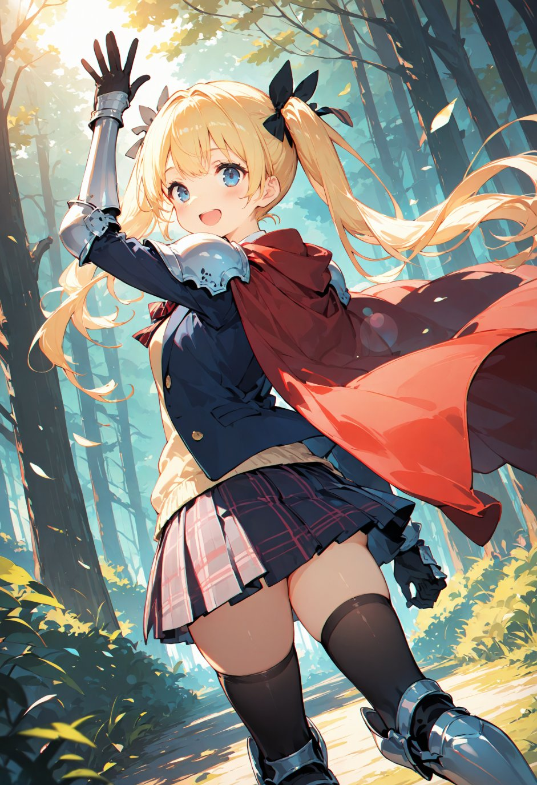
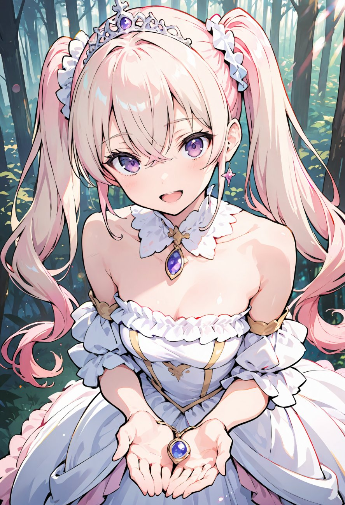

第7話
騎士団の訓練場での出来事が王城中で噂となり、美桜ちゃんの名前は早くも人々の耳に広まり始めていた。 その後、美桜ちゃんは城下町を散策し、装備を整えたり、旅に必要な準備を進めたりして数日が過ぎた。 その間、ミユ姫は興奮した様子で美桜ちゃんの旅立ちを見送るための手配を進めていた。
そして、いよいよ出発の日の朝がやってきた。 城の門の前には、美桜ちゃんを見送る人々の列ができていた。騎士団の隊長や召使い、さらには城下町の住人たちも集まり、それぞれが声をかけたり手を振ったりしている。
美桜ちゃんは剣を腰に下げ、赤いマントを軽やかに揺らしながら立っていた。 「よーし！準備万端！ミユ姫、あとは任せてね！」 彼女の元気な声に、ミユ姫は微笑みながら頷いた。
ミユ姫がしっかりとした声で話しかける。 「ミオちゃん、まずはこの世界の知識を集めるために『大魔導図書館』を目指してください。そこには古代からの知識や伝説が保管されており、元の世界に戻る方法も記されているかもしれません。」

「大魔導図書館かぁ……なんかすごそう！」 美桜ちゃんは興味津々に目を輝かせた。
「その場所へ行くには、広大な森を抜け、いくつかの村を越えたあと、この海を渡らなくてはなりません。道中には危険もありますが、この地図を持っていけば大丈夫です。」 ミユ姫は地図を広げ、ルートを指差しながら説明した。
「海も越えるんだ……」 美桜ちゃんは地図をじっと見つめ、「なるほどね」と頷いたあと、苦笑した。 「うーん、私、方向音痴だからなぁ……でも、なんとかなるよね！」
ミユ姫は微笑み、そっと美桜ちゃんの手を握った。 「これを持っていてください。」 差し出されたのは、美しく輝く小さなペンダントだった。中央に埋め込まれた宝石が淡い光を放っている。 「このペンダントは、私の家族に代々伝わるものです。危機に陥った時、きっとあなたを守ってくれるはずです。」
「え、こんな大事なもの……いいの？」 美桜ちゃんは戸惑いながらも、ミユ姫の真剣な表情を見て受け取った。 「ありがとう、大切にするね。」

すると、騎士団長も前に出て、美桜ちゃんに深々と頭を下げた。 「勇者様。私たち騎士団一同、あなたの旅路の成功を心からお祈りしております。そして、必要とあらば、いつでもこの国に戻ってきてください。」
「うん！ありがとう！その時はまたよろしくね！」 美桜ちゃんは元気よく手を振ると、城門の外へと歩き始めた。
朝日が昇り始め、城門がゆっくりと開かれる。 「よーし、まずは大魔導図書館を目指して、行くよー！」 美桜ちゃんの明るい声が響き、彼女の赤いマントが朝日に照らされて輝いた。
門の向こうに広がるのは、美桜ちゃんがまだ見ぬ広大な異世界の風景。 一歩一歩進むごとに、旅の期待感が胸の中で高まっていった。
― この話はここまで ―